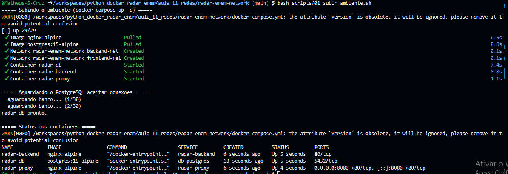
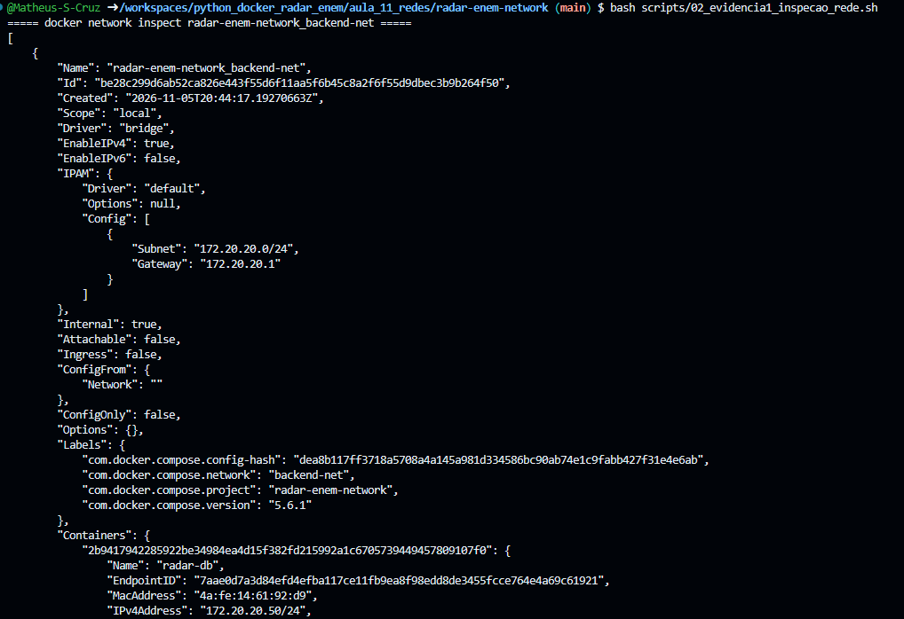
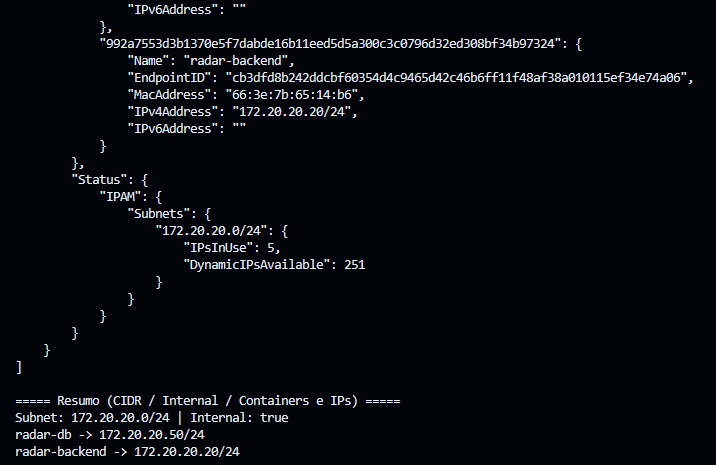
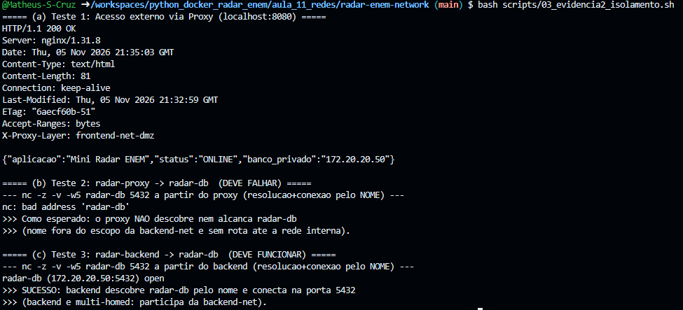
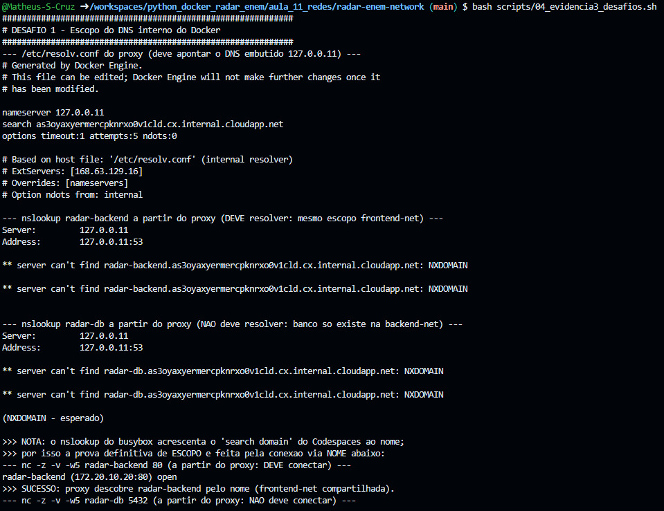
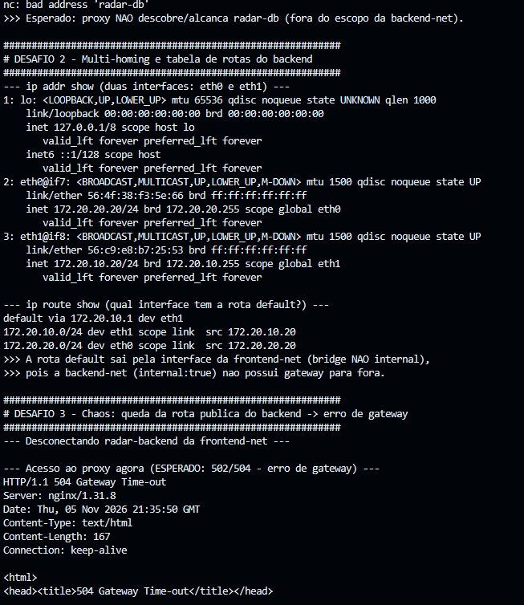
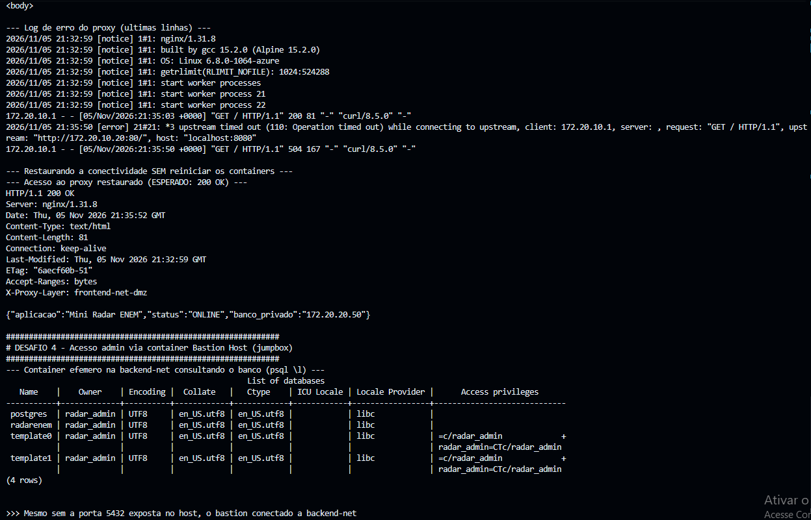
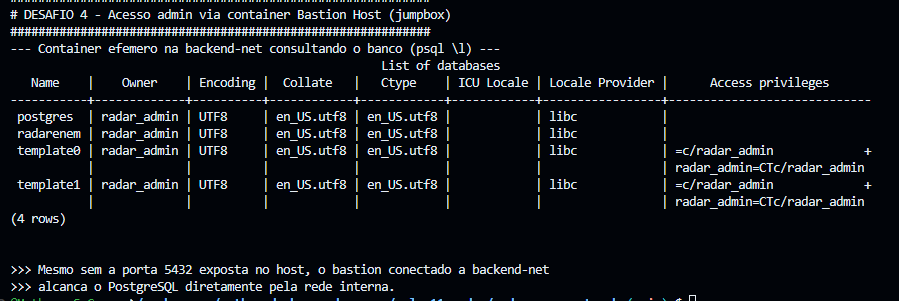
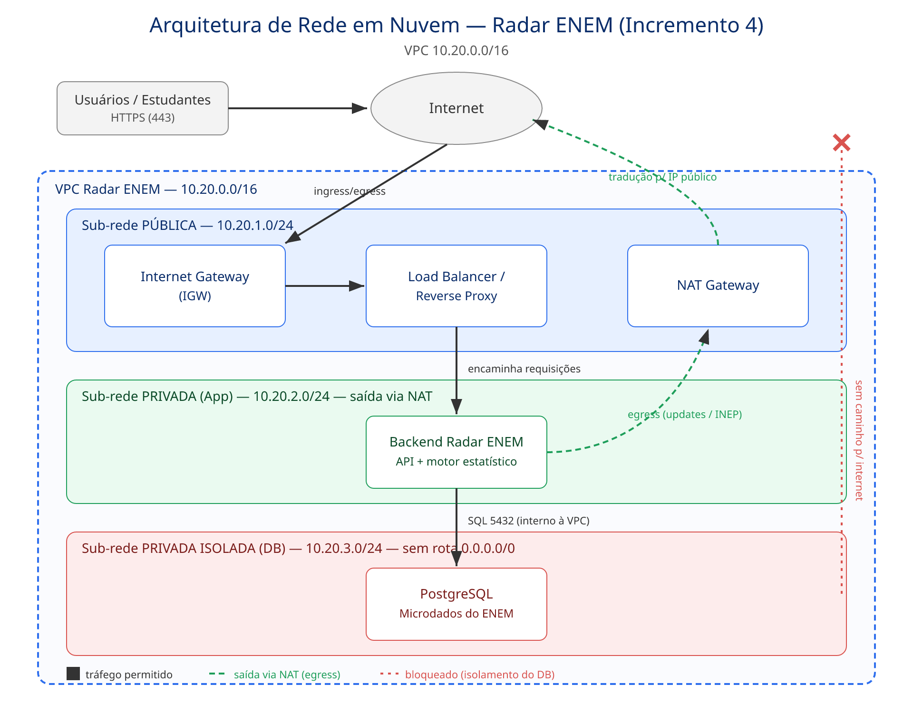

| # | Entregável | Onde está neste PDF |
|---|---|---|
| 1 | Inspeção da rede interna (backend-net): CIDR, Internal: true e IPs | Evidência 1 |
| 2 | Testes de isolamento (Passo 5): proxy OK, proxy✗db, backend✓db | Evidência 2 |
| 3 | Os 4 desafios investigativos (Passo 6) | Evidência 3 |
| 4 | Diagrama arquitetural da VPC 10.20.0.0/16 (Incremento 4) | Evidência 4 |
| 5 | Relatório técnico de análise e defesa arquitetural | Seção Relatório Técnico |
Internet / Host
|
:8080 (unica porta publicada)
|
+-------------- radar-proxy (172.20.10.10) --------------+
| frontend-net 172.20.10.0/24 |
| | |
| radar-backend (172.20.10.20) | <- multi-homed
+-------------------------------------------------------+
| (172.20.20.20)
+------------- backend-net 172.20.20.0/24 (internal) ----+
| | |
| radar-db (172.20.20.50, PostgreSQL) | <- sem porta no host
+-------------------------------------------------------+
Ambiente no ar — docker compose up -d: 3 containers (proxy, backend, db) e 2 redes
(frontend-net e backend-net internal). Apenas radar-proxy publica a porta 8080.

Figura 0 — docker compose up -d: imagens, redes e containers criados; PostgreSQL pronto; docker compose ps.
Saída de docker network inspect radar-enem-network_backend-net comprovando o bloco CIDR
172.20.20.0/24, o status "Internal": true e os IPs atribuídos a
radar-backend (.20) e radar-db (.50).

Figura 1.1 — Cabeçalho do inspect: driver bridge, Subnet 172.20.20.0/24, Gateway e "Internal": true.

Figura 1.2 — Containers na backend-net: radar-db → 172.20.20.50 e radar-backend → 172.20.20.20.
Demonstra, na ordem: (a) o proxy público respondendo 200 OK em localhost:8080;
(b) a falha de radar-proxy → radar-db (o proxy não resolve nem alcança o banco); e
(c) o sucesso de radar-backend → radar-db (o backend é multi-homed e participa da rede interna).
A descoberta de serviço é provada pela conexão real via nome do container (nc -z -v radar-db 5432): se conecta, o nome resolveu pelo DNS do Docker (127.0.0.11) e existe rota; se não, está isolado.

Figura 2 — (a) 200 OK + JSON; (b) nc: bad address 'radar-db' → proxy isolado do banco; (c) radar-db (172.20.20.50:5432) open → backend conecta.

Figura 3.1 — /etc/resolv.conf aponta para 127.0.0.11; prova de escopo por conexão: radar-backend resolve/conecta, radar-db não (fora da backend-net).

Figura 3.2 — Desafio 2: duas interfaces (eth0=172.20.20.20, eth1=172.20.10.20) e rota default via eth1 (frontend-net). Desafio 3: desconexão → erro de gateway (504).

Figura 3.3 — Log do proxy (upstream timed out) e restauração sem reiniciar (200 OK); Desafio 4: container efêmero na backend-net executa psql \l listando o banco radarenem.

Figura 3.4 — Mesmo sem a porta 5432 exposta no host, o bastion conectado à backend-net alcança o PostgreSQL diretamente pela rede interna.
VPC 10.20.0.0/16 do Radar ENEM com as 3 sub-redes e seus CIDRs, o Internet Gateway,
o NAT Gateway e o sentido das setas de tráfego.

Figura 4 — Pública 10.20.1.0/24 (IGW + LB + NAT GW) · Privada App 10.20.2.0/24 (saída via NAT) · Privada isolada DB 10.20.3.0/24 (sem rota 0.0.0.0/0).